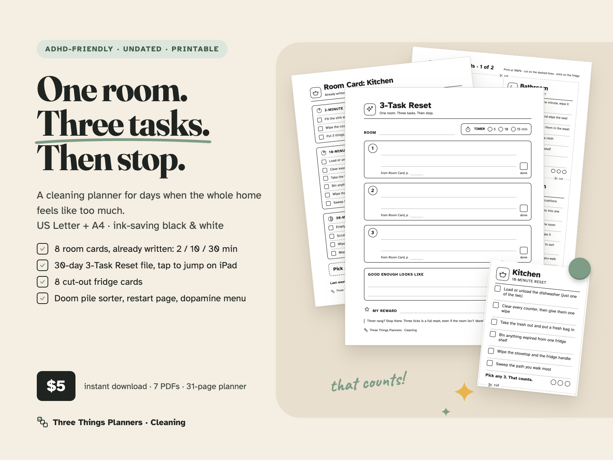
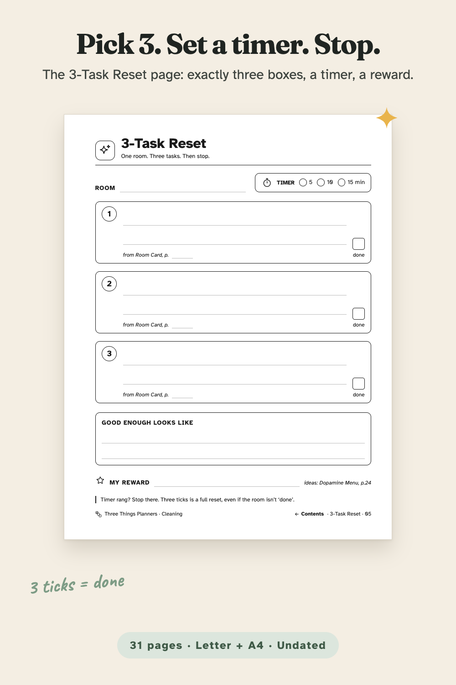
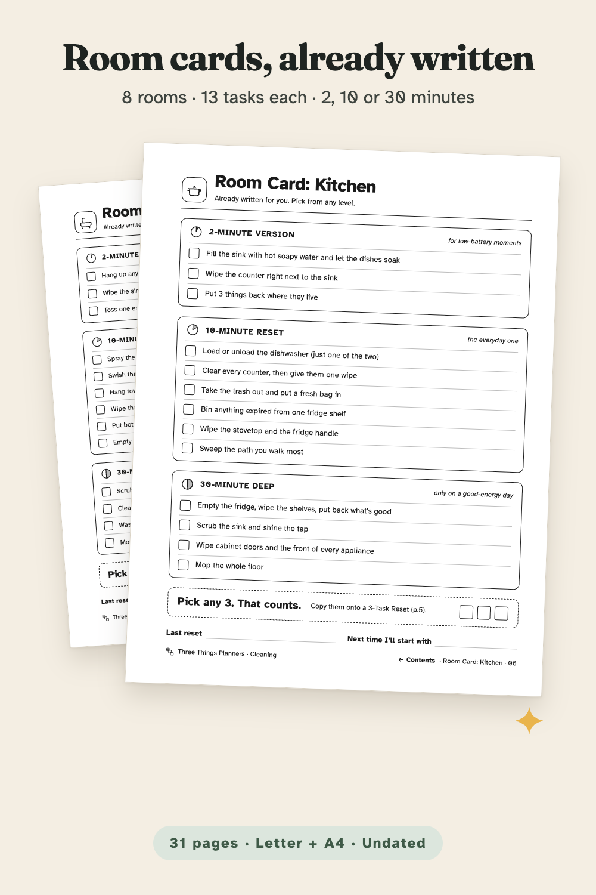
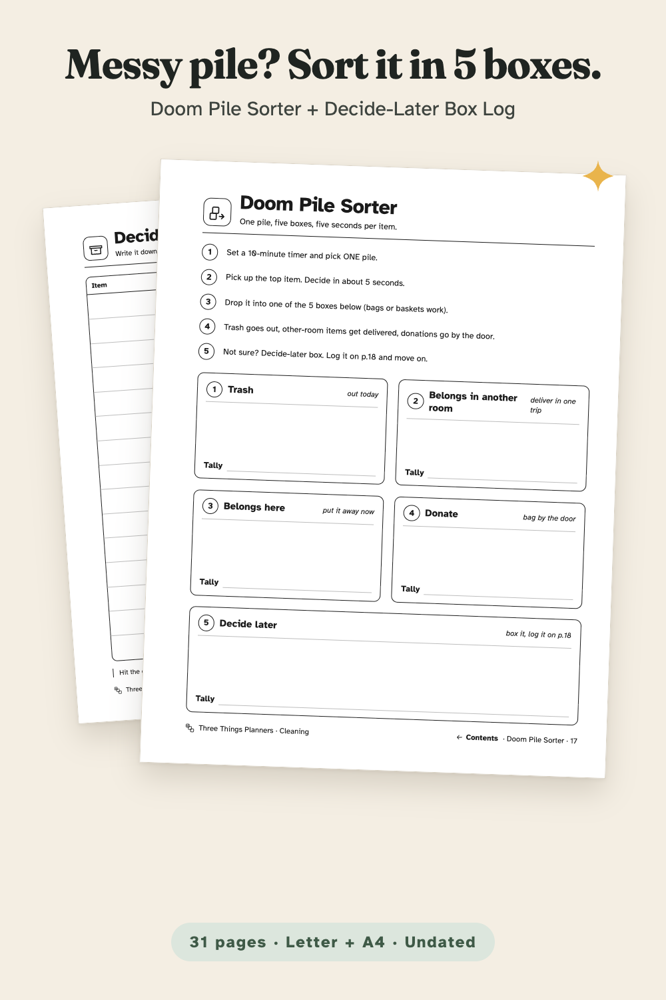
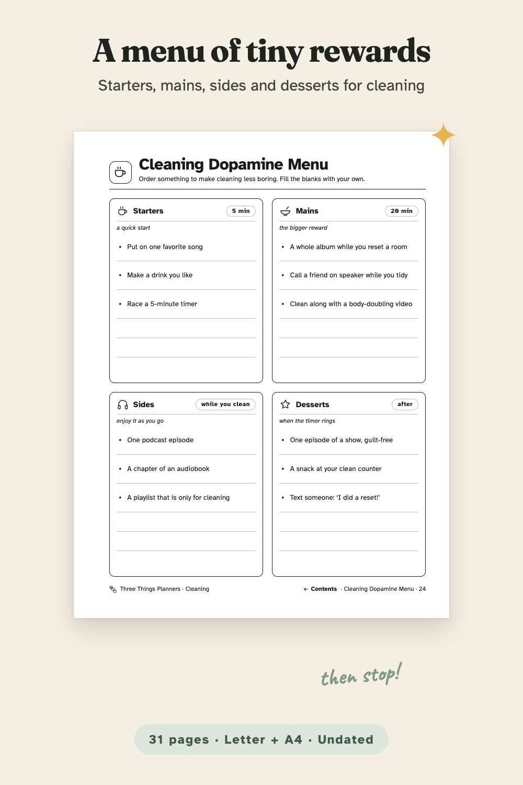
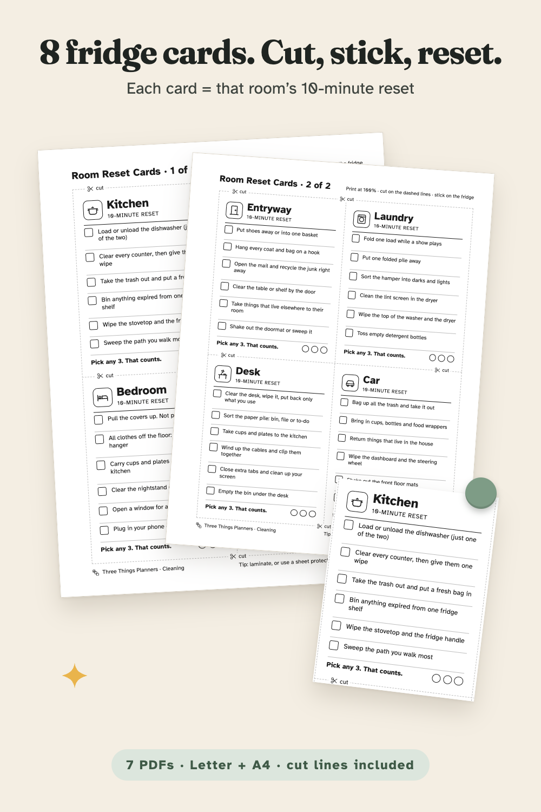
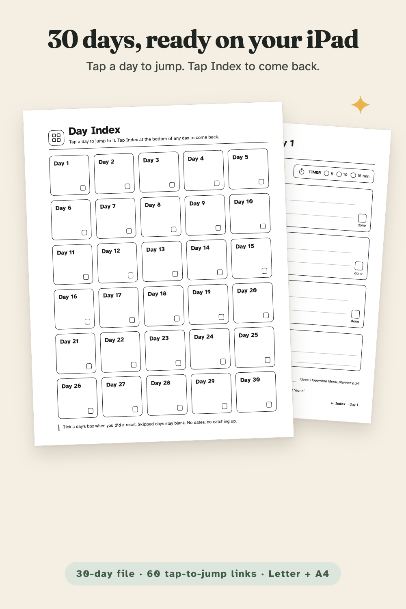
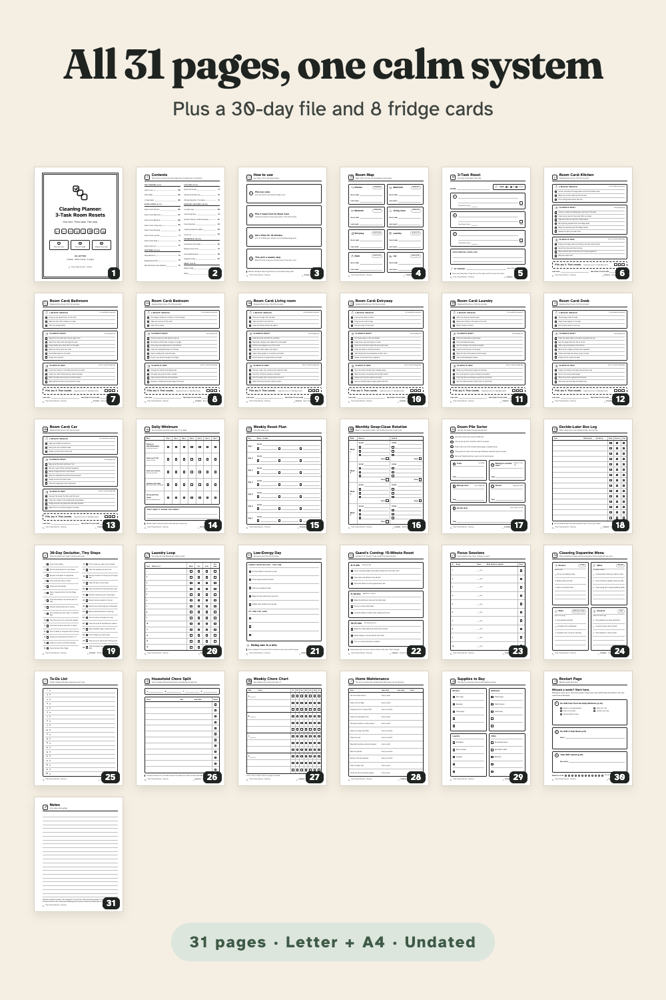

One room. Three tasks. Then stop. An undated, ink-saving cleaning planner with 8 pre-written room cards, a 30-day 3-Task Reset file and 8 cut-out fridge cards.
From Three Things Planners, the planner imprint of Hustle Studio. New shop, no reviews yet.

$5.00 USD, one-time payment, instant download. No subscription.
Buy now: $5 Try 3 real pages free (PDF, no email)🔒 Secure checkout: Waffo Pancake is our merchant of record. It takes the payment (major cards accepted), handles tax and sends your receipt; we never see your card details.
14-day refund, no questions asked. Satisfaction guarantee: if it doesn't help you start cleaning, you get a full refund, no reason needed. Email chenphien@gmail.com (Three Things Planners support) within 14 days of purchase with your order email. We aim to reply within 2 business days, and the refund goes back to your original payment method through Waffo Pancake (see Terms).
Try before you buy: the free 3-page sample (PDF) has three real pages from the planner: 3-Task Reset, Room Card: Kitchen and Low-Energy Day, US Letter. No email needed. You can also look through it right on this page.
A new shop, honestly. We're new and have no reviews yet, and we won't invent any. So here is why it's built this way instead: long cleaning lists make it hard to start, so every reset is capped at three tasks. Write three, tick three, then stop. Stopping is the plan, not a failure.
Every image below is rendered from the real PDF pages. No buyer photos or reviews yet: the shop is new, and we won't invent any. The free sample lets you print three real pages before you pay.







The actual free-sample PDF: 3-Task Reset, Room Card: Kitchen and the Low-Energy Day page. If it doesn't show on your device, download it here.
The real pages in a phone-size browser viewer: Day Index → Day 7 → Index, then Contents → Doom Pile Sorter → Contents. It is not recorded inside GoodNotes itself.
When the whole home feels like too much, a long cleaning checklist can make it harder to start. This planner works the other way around: pick one room, choose three small tasks, set a timer, and stop when it rings. Three ticks is a full reset.
You don't have to think up the tasks. Each of the 8 Room Cards lists 13 tasks in plain English, sorted by size: a 2-minute version for low-battery moments, a 10-minute everyday reset, and a 30-minute deep clean for a good-energy day.
Around that core: a Room Map, a Daily Minimum (5 tiny basics × Day 1–7), a Weekly Reset Plan, a Monthly Deep-Clean Rotation, a Doom Pile Sorter, a Decide-Later Box Log, a 30-Day Declutter list of tiny steps, a Laundry Loop, a Low-Energy Day page, a Guest's Coming 15-minute reset, Focus Sessions, a Cleaning Dopamine Menu, a Ta-Da List, a Household Chore Split and Weekly Chore Chart for up to 4 people, Home Maintenance, Supplies to Buy, a Restart Page and lined Notes.
On an iPad: import the planner into GoodNotes or Notability and tap any line on the Contents page to jump; every page has a Contents link at the bottom (58 links per planner file). The 30-day file has a tappable Day Index (60 links per file).
On paper: print at 100%. The wide left margin is for a hole punch. Laminate a room card or a 3-Task Reset sheet and reuse it with a dry-erase marker.
One ZIP download, ADHD-Cleaning-Planner_All-Files.zip, with 7 PDFs. Each file is also listed for direct download after payment.
ADHD-Cleaning-Planner_Letter.pdf 31 pages, US Letter 8.5 × 11 in ADHD-Cleaning-Planner_A4.pdf 31 pages, A4 210 × 297 mm 3-Task-Reset_30-Days_Letter.pdf 31 pages: Day Index + Day 1–30 3-Task-Reset_30-Days_A4.pdf 31 pages: Day Index + Day 1–30 Room-Reset-Cards_Letter.pdf 2 pages: 8 fridge cards Room-Reset-Cards_A4.pdf 2 pages: 8 fridge cards README.pdf 2 pages: print settings, iPad import, license
The 31 planner pages: 1 Cover · 2 Contents · 3 How to use · 4 Room Map · 5 3-Task Reset · 6–13 Room Cards (Kitchen, Bathroom, Bedroom, Living room, Entryway, Laundry, Desk, Car) · 14 Daily Minimum · 15 Weekly Reset Plan · 16 Monthly Deep-Clean Rotation · 17 Doom Pile Sorter · 18 Decide-Later Box Log · 19 30-Day Declutter, Tiny Steps · 20 Laundry Loop · 21 Low-Energy Day · 22 Guest's Coming: 15-Minute Reset · 23 Focus Sessions · 24 Cleaning Dopamine Menu · 25 Ta-Da List · 26 Household Chore Split · 27 Weekly Chore Chart · 28 Home Maintenance · 29 Supplies to Buy · 30 Restart Page · 31 Notes
Is this a physical product?
No. It's an instant digital download: 7 PDFs in one ZIP. Print at home or use them in a note-taking app.
Which size should I print?
US Letter in the US and Canada, A4 almost everywhere else. Both are included and each is laid out for its own paper. Print at "Actual size / 100%".
Do the links work in GoodNotes and Notability?
Yes, they are standard PDF internal links: tap a line on Contents (planner) or a day on the Day Index (30-day file), and tap Contents or Index at the bottom of a page to go back. In GoodNotes, links respond in read-only mode.
The Notes page mentions another product. Do I need it?
No. Page 31 has an optional printed URL for our separate Printable Planner Pack (daily and weekly pages). This cleaning planner is complete without it.
What if it doesn't work for me?
Email chenphien@gmail.com within 14 days of purchase for a full refund, no questions asked. We're a new shop with no reviews yet, which is why there is a free 3-page sample to try first.
This planner is an organizing tool. It is ADHD-friendly by design, and it is not medical advice.
$5.00 USD, one-time payment, instant download
Buy now: $5 Try 3 real pages free (PDF, no email)🔒 Secure checkout by Waffo Pancake, our merchant of record (major cards accepted). 14-day refund, no questions asked: email chenphien@gmail.com, refunded to your original payment method.